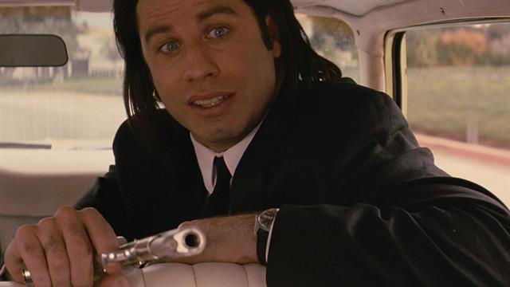
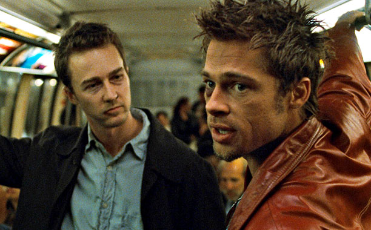
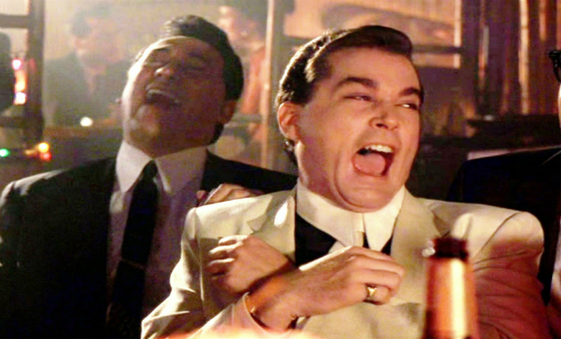
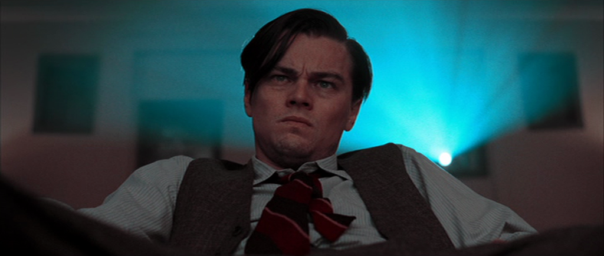

These are my favorite four movies of all time. My favorite directors include Martin Scorsese and Quentin Tarantino while my top actors are Leonardo DiCaprio and Robert De Niro. All these men are well-represented in the top four list. Enjoy!
October 14, 1996
Seeing this movie last May at the Cannes Film Festival, I knew it was either one of the year's best films, or one of the worst.
Quentin Tarantino is the Jerry Lee Lewis of cinema, a pounding performer who doesn't care if he tears up the piano, as long as everybody is rocking. His new movie "Pulp Fiction" is a comedy about blood, guts, violence, strange sex, drugs, fixed fights, dead body disposal, leather freaks, and a wristwatch that makes a dark journey down through the generations.
Tarantino is too gifted a filmmaker to make a boring movie, but he could possibly make a bad one: Like Edward D. Wood Jr., proclaimed the Worst Director of All Time, he's in love with every shot - intoxicated with the very act of making a movie. It's that very lack of caution and introspection that makes "Pulp Fiction" crackle like an ozone generator: Here's a director who's been let loose inside the toy store, and wants to play all night.
Directed by: Quentin Tarantino
Starring:
Samuel L. Jackson
John Travolta
Uma Thurman
Bruce Willis
Tim Roth
Harvey Keitel
Ving Rhames
Christopher Walken
Quentin Tarantino
The screenplay, by Tarantino and Roger Avary, is so well-written in a scruffy, fanzine way that you want to rub noses in it - the noses of those zombie writers who take "screenwriting" classes that teach them the formulas for "hit films." Like "Citizen Kane," "Pulp Fiction" is constructed in such a nonlinear way that you could see it a dozen times and not be able to remember what comes next. It doubles back on itself, telling several interlocking stories about characters who inhabit a world of crime and intrigue, triple-crosses and loud desperation. The title is perfect. Like those old pulp mags named "Thrilling Wonder Stories" and "Official Detective," the movie creates a world where there are no normal people and no ordinary days - where breathless prose clatters down fire escapes and leaps into the dumpster of doom.
The movie resurrects not only an aging genre but also a few careers.
October 15, 1999
Guaranteed: Fight Club will blow your skirt up. It's not just the rush of seeing Edward Norton, Brad Pitt and director David Fincher hit career peaks in a groundbreaking film. And it's not the sick kick of watching Gen X amateurs bare-knuckling each other in seedy basements; that'd get old fast. The film's bold, bruising humor leaves marks on a wide range of hot-button issues: It's about being young, male and powerless against the pacifying drug of consumerism. It's about solitude, despair and bottled-up rage. It's about how not to feel dead as Y2K approaches. It's about daring to imagine the disenfranchised reducing the world to rubble and starting over.
Directed by: David Fincher
Starring:
Edward Norton
Brad Pitt
Helena Bonham Carter
Adapted from the book by: Chuck Palahniuk
For daring to imagine, Fight Club will take a few hits. Fincher's film of Chuck Palahniuk's 1996 novel – with a high-voltage script by newcomer Jim Uhls – is already being misinterpreted as an "apology for fascism." One critic wondered whether Rupert Murdoch's Fox 2000, the company releasing Fight Club, "knew what it was doing" in spending $70 million on a movie that is "not only anti-capitalism but anti-society and, indeed, anti-God." My take is that Fight Club is pro-thinking, no matter what deities are offended. Is that threatening? You bet.
Fincher is a visionary who keeps Fight Club firing on all cylinders, raising hallucinatory hell in ways too satisfying toi spoil here. As for the dissenters, "I Am Jack's Complete Lack of Surprise". Fincher's refusal to moralize and reassure has possed off the watchdogs of virtue. Let 'em bark. They think anything alive is dangerous. Fight Club pulld you in, challenges your prejudices, rocks your world and leaves you laughing in the face of an abyss. It's alive, all right. It's also an uncompromising American classic.
September 19, 1990
To see an artist working at the peak of his power, everything extraneous stripped away, every element there for a purpose, is an extraordinary exhilaration.
Martin Scorsese gave us that pure, hot, unquestioned power last in "Raging Bull" and, in virtuosity alone, "GoodFellas" is "Raging Bull" squared. (It opens Friday at selected theaters.)
Scorsese has hardly been marking time in the 10 years between the two; "After Hours" and his "Life Lessons" segment of "New York Stories" showed just how much he has matured, grown more intelligently ironic and is even more astonishingly in command of his craft. "GoodFellas," which somehow mixes its horrors with a deep vein of mordant humor, flows with the exuberance of a filmmaker who has every detail nailed and a few new lovely moves he wants to show us.
His characters--a savage quartet that includes Robert DeNiro, a truly chilling Joe Pesci, Paul Sorvino and Ray Liotta--are the same ones he has been considering since "Mean Streets": the wise guys of his neighborhood, different from us in that pity seems to have been left out of their DNA and an off-handed brutality slipped into its place.
Directed by: Martin Scorsese
Starring:
Ray Liotta
Robert De Niro
Joe Pesci
Lorraine Bracco
Adapted from the book by: Nicholas Pileggi
Freddy No Nose, Johnny Roastbeef, Jimmy Two Times and the fatally nudgy toupee king Morrie Kessler (Chuck Low) are part of the creepy fun of the movie. Scorsese lets us smile at their preening excesses, their kidding-on-the-square--the half-laughing threat to Henry by Joe Pesci's Tommy DeVito that freezes all laughter at the wise guy's table. Then in a moment that confirms our darkest fears about DeVito, he abruptly shuts down the laughs forever. Only the tension is left and this flawless cast plays that perfectly. No horror film carries the fright of Jimmy Conway's friendly invitation to Karen that she pick out a dress for herself . . . down the street a little, at that darkened doorway.
December 19, 2004
Directed by: Martin Scorsese
Starring:
Leonardo DiCaprio
Katherine Hepburn
Kate Beckinsale
John C. Reilly
Alec Baldwin
Alan Alda
Howard Hughes envisioned by Martin Scorsese and embodied by Leonardo DiCaprio in "The Aviator" is the ultimate can-do American, a ruthless, shoot-from- the-hip capitalist not afraid to gamble his fortune buying TWA or spend four years and a record-breaking budget to produce and direct his airborne World War I epic "Hell's Angels." He's a charming vulgarian, a lanky Texas shark with a voracious appetite for fame, fortune, aviation, beautiful women, the picture business--and the sheer pleasure of speed. Scorsese channels Hughes's hyperactive energy in his razzle-dazzle, high-flying biopic, his swooping, restless camera and virtuoso editing inducing a contact high.
But there's another side to Hughes--a streak of mental illness that stops this prince of perpetual motion in his tracks. An obsessive-compulsive with a lifelong phobia about germs, Hughes goes into the men's room at the Coconut Grove to clean a food stain off his shirt and becomes paralyzed, unable to exit because he can't bring himself to touch the doorknob and has to wait, terrified and humiliated, for someone to open it. When Hughes succumbs to bouts of madness, the movie goes still, as if stricken. "The Aviator" is built on these opposites: motion and stasis, a lust for life and a terror of it, teeming scenes of action and the stark spectacle of a frozen, paranoid man naked and alone in a room. It's a bipolar epic.
DiCaprio is astonishing--wily, impulsive, paranoid, lurching from manic highs to crippling lows. I couldn't imagine him in this part but after seeing the movie, I can't imagine anyone else. Of course he's more boyish than the real guy, less craggily masculine. It doesn't matter: he suits Scorsese's design perfectly. This is, frankly, a somewhat whitewashed portrait. There's no mention of the man's racism and anti-Semitism, his flings with his male employees (if Charles Higham's biography is to be trusted) or the myriad others he used and discarded. This almost-great epic has one foot in legend: it's a vision of an American titan that could have sprung from the insides of Hughes's own obsessive, perfectionist head. It's an exhilarating--and sometimes chilling--place to be.